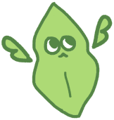

<!doctype html>
<html lang="zh-Hant">
<head>
<meta charset="utf-8">
<meta name="viewport" content="width=device-width, initial-scale=1, viewport-fit=cover, user-scalable=no">
<meta name="theme-color" content="#f7f2e3">
<meta name="description" content="國立暨南國際大學 115-1 非營利組織第二組「大家來找茶」：跟著茶葉精靈薩姆，認識茶的種類、台灣名茶、日月潭紅茶與沖泡方法。">
<title>大家來找茶｜茶葉知識小遊戲</title>
<meta property="og:title" content="大家來找茶｜茶葉知識小遊戲">
<meta property="og:description" content="跟著茶葉精靈薩姆，認識茶的種類、台灣名茶、日月潭紅茶與沖泡方法。">
<link rel="preconnect" href="https://fonts.googleapis.com">
<link rel="preconnect" href="https://fonts.gstatic.com" crossorigin>
<link href="https://fonts.googleapis.com/css2?family=LXGW+WenKai+TC:wght@400;700&display=swap" rel="stylesheet">
<link rel="stylesheet" href="css/style.css">
<link rel="stylesheet" href="css/extra.css">
<link rel="stylesheet" href="css/tea.css">
<link rel="stylesheet" href="css/brew.css">
<link rel="stylesheet" href="css/game.css?v=2">
</head>
<body>

<svg width="0" height="0" style="position:absolute" aria-hidden="true">
  <defs>
    <filter id="wob" x="-5%" y="-5%" width="110%" height="110%">
      <feTurbulence type="fractalNoise" baseFrequency="0.018" numOctaves="2" seed="7" result="n"/>
      <feDisplacementMap in="SourceGraphic" in2="n" scale="7"/>
    </filter>
    <filter id="wob-s" x="-10%" y="-10%" width="120%" height="120%">
      <feTurbulence type="fractalNoise" baseFrequency="0.05" numOctaves="2" seed="3" result="n"/>
      <feDisplacementMap in="SourceGraphic" in2="n" scale="3"/>
    </filter>
  </defs>
</svg>

<div id="tea">
  <header class="t-top">
    <button class="icon-btn" id="btnMenu" aria-label="關卡選單">
      <svg viewBox="0 0 24 24"><path d="M4 11l8-7 8 7M6 10v9h12v-9"/></svg>
    </button>
    <ol class="t-steps" id="steps"></ol>
    <button class="icon-btn sound-btn" data-sound aria-label="聲音">
      <svg viewBox="0 0 24 24"><path d="M4 10v4h3l5 4V6L7 10H4Z"/><path class="s-on" d="M16 9c1.6 1.6 1.6 4.4 0 6M18.6 6.5c3 3 3 8 0 11"/><path class="s-off" d="M16 9.5l5 5M21 9.5l-5 5"/></svg>
    </button>
  </header>

  <div class="t-stage-wrap">
    <div class="t-stage" id="tStage"></div>
  </div>

  <footer class="t-guide">
    <div class="g-box" id="gBox">
      <div class="g-sam sam-shake"></div>
      <div class="g-body">
        <b class="g-name">薩姆</b>
        <p class="g-text" id="gText"></p>
      </div>
    </div>
    <button class="btn btn-primary g-btn" id="gBtn" disabled></button>
  </footer>

  <div id="toast"></div>
  <div id="grain"></div>
</div>

<script>
  /* 音效設定（js/audio.js 會讀這裡） */
  const CONFIG = { AUDIO: { bgm: 'audio/bgm_peaceful_town.mp3', bgmVolume: .3,
    sfx: { click: 'audio/click.wav', tick: 'audio/tick.wav', pop: 'audio/pop.wav', ok: 'audio/ok.wav', bad: 'audio/bad.wav' }, sfxVolume: .6 } };
  /* 只有中文：t() 只負責把 {0} {1} 換成參數 */
  function t(s, ...a) { a.forEach((v, i) => { s = s.split('{' + i + '}').join(v); }); return s; }
</script>
<script src="js/audio.js"></script>
<script src="js/data.js?v=2"></script>
<script src="js/game.js?v=2"></script>
</body>
</html>
